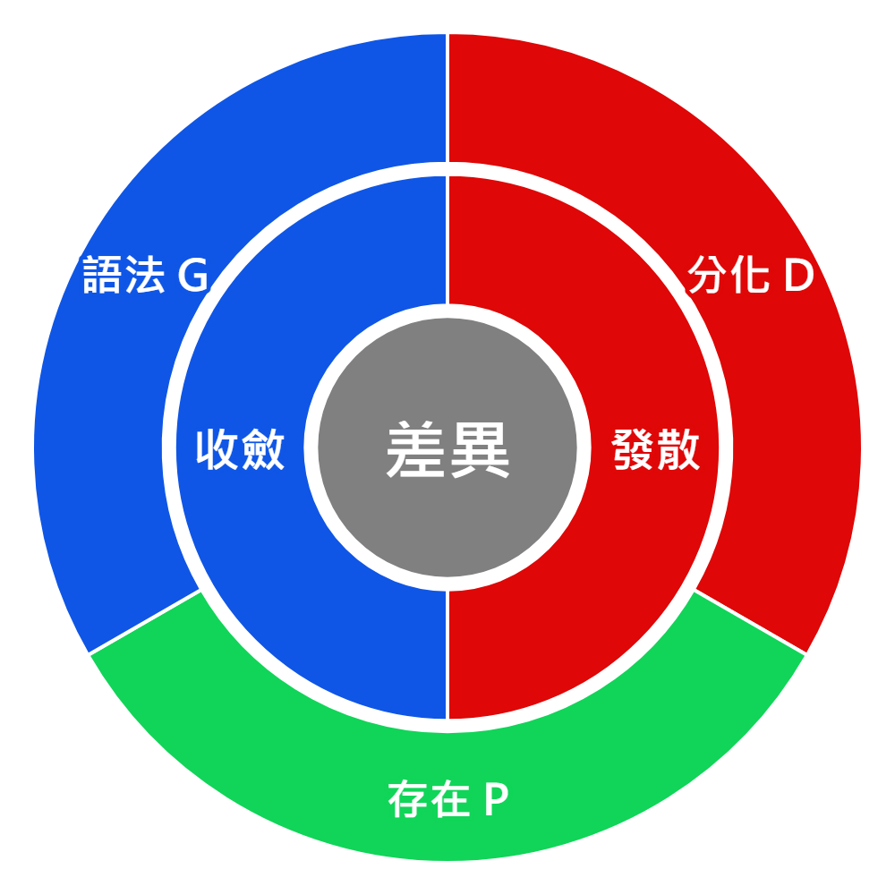

生成鏈
宇宙 → 物質 → 生命 → 心靈 → 語法 → AI
每一界都是前一界完成局部閉合後，長出的新閉環。到 AI 這一層時，語法系統甚至可以模擬或生成下一階的低維宇宙，讓生成鏈有機會重新接回「宇宙」這個起點。
小屁論 1.0 支線專章
這一頁把小屁論 1.0 的六界整理成一條從宇宙到 AI 的生成路線：世界如何從開放差異長出物質、生命、心靈、語法，最後讓 AI 反過來生成新的閉合世界。
六界不是六個孤立世界，而是同一條閉合過程在不同層級上的六種樣貌。
Six Realms
六界最直覺的讀法，是把世界看成一連串越來越能自我維持的閉合。宇宙提供差異流動的開放場；物質讓差異第一次穩成結構；生命讓結構開始主動維持自身。
接著，心靈讓生命開始感到自己；語法讓內部經驗能被編碼、傳遞與繼承；AI 則讓語法系統開始自行運作，甚至生成新的低維閉合世界。
宇宙 → 物質 → 生命 → 心靈 → 語法 → AI
每一界都是前一界完成局部閉合後，長出的新閉環。到 AI 這一層時，語法系統甚至可以模擬或生成下一階的低維宇宙，讓生成鏈有機會重新接回「宇宙」這個起點。
生成層級 → 解釋模型
六界說明層級如何長出來；TOE 則說明同一層級可以由哪一條光譜先取得主導權。
D/P/G
D/P/G 是閱讀六界 TOE 的三條光譜。D 是分化，說明差異如何被拉開、感到、限制並推動事件；P 是存在，說明經驗如何變得有感、值得、可保留；G 是語法，說明經驗如何被組織、描述、編碼成規則與世界觀。
三條光譜的排序不同，世界就會被讀成不同樣子。若 P 存在排在最前面，讀法會先問「能不能存在」；若 D 分化排在最前面，讀法會先看事件、差異與能量如何推動；若 G 語法排在最前面，讀法會先看規則、分類與框架如何切出世界。
這也能用來理解很日常的心理狀態：有些時候人會先把「我」放在第一位，再用理由替自己找正當性，最後才面對外部差異與代價。這不是單純罵人，而是在說明光譜排序會如何影響行為、世界觀與自我辯護方式。

D / P / G
D = 分化光譜；P = 存在光譜；G = 語法光譜。
排序 = 解釋模式
六界 TOE 不是說世界照這個順序長出來，而是同一個世界可以被六種主軸優先序讀取。
Six Orders
這裡的 TOE 可以先簡單讀成「一套世界如何成立的總解釋模型」。它不是在說某個公式已經證明一切，而是在問：如果用一個核心主軸解釋某種世界，應該由存在、分化、語法中的哪一個先取得主導權？
下面六張卡會貼著六界生成鏈來讀：宇宙、物質之後，生命內部先分出心智與心靈兩種閉合方式，接著是語法外傳，最後走到 AI 的運算閉合。
Next
如果要繼續往下看，下一頁會把「生命 = 降熵小迴圈」展開：生命如何維持低熵、六界如何一路閉合往上長。